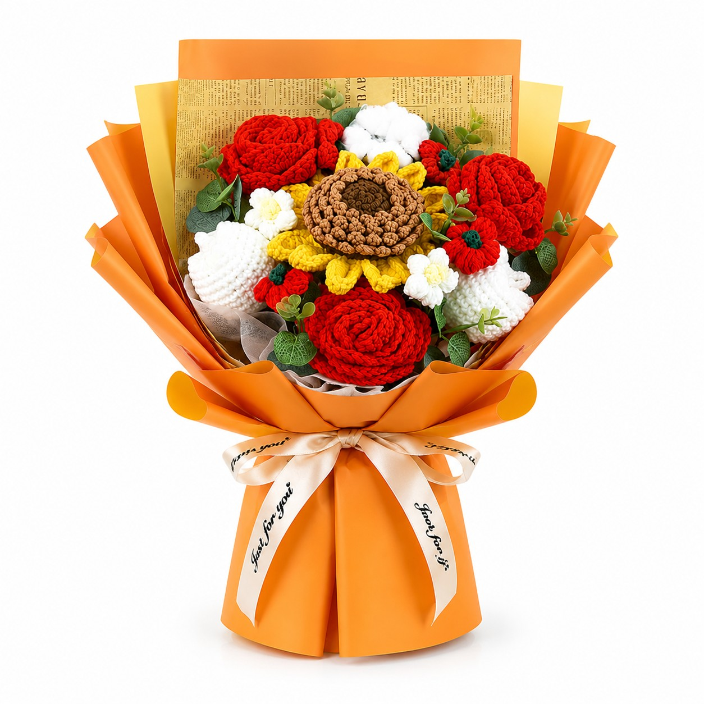

Wholesale Crochet Bouquets
Work with a crochet bouquet supplier that supports custom flower combinations, brand colors, wrapping direction and retail-ready packaging for bulk programs.
Wholesale Crochet Bouquets for Floral and Gift Retail
Custom Flower Mix
Combine roses, tulips, sunflowers, lilies and seasonal flowers around your target retail price and visual direction.
Branded Presentation
Choose wrapping paper, ribbon, message cards, hangtags and gift boxes for your market.
Everlasting Inventory
No refrigeration or spoilage, making crochet bouquets suitable for year-round gifting and event programs.
Bulk Crochet Flowers and Finished Bouquet Programs
PEIMI can supply finished bouquet assortments and, when the brief requires it, crochet flowers in bulk for florist add-ons, displays and gift-set assembly. Send reference photos, colors, target dimensions, stem or bouquet requirements, packaging needs and expected quantity.
Crochet Bouquet Supplier FAQ
What is the standard MOQ?
The standard MOQ is 200 pieces per style, with final quantity and color splits confirmed during quotation.
What can PEIMI customize?
Flower combinations, colors, bouquet size, wrapping, ribbons, message cards, labels and retail packaging can be reviewed during sampling.
Can I order loose stems?
Yes. Buyers can discuss bulk crochet flowers or loose stems when the intended retail program does not require finished bouquets.